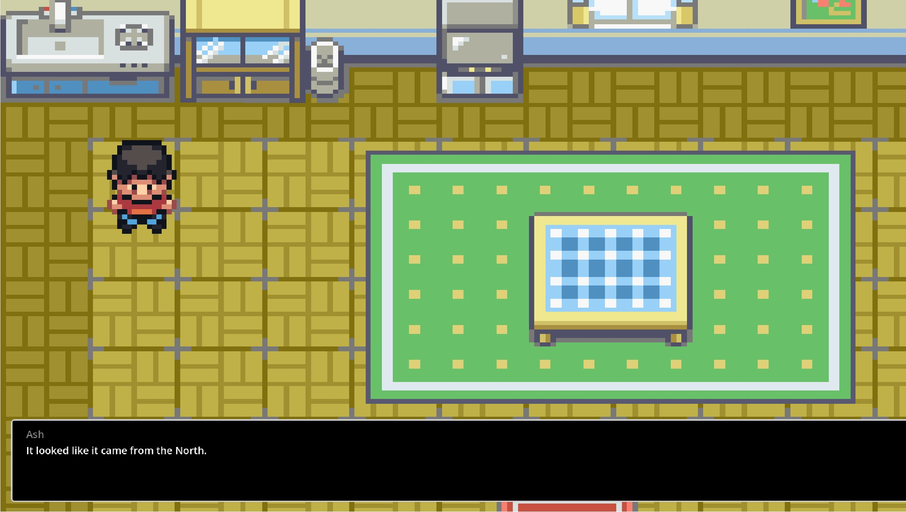
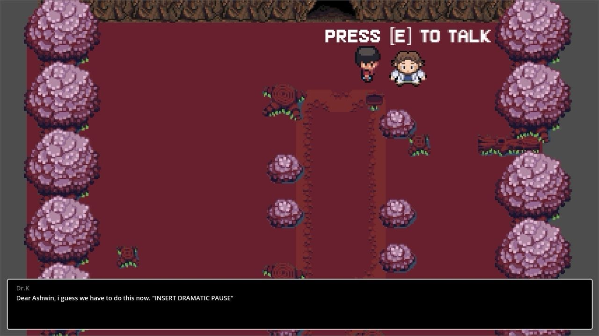

A Game for Love: Harini and Ashwin's Engagement
Turning a heartfelt idea into a reality through a custom-made video game for two of my closest friends.
The Inspiration
Harini and Ashwin, two of my best friends, share a love that’s truly inspiring. Ashwin, an avid gamer with a calm and collected personality, was deeply moved after watching a YouTube video where someone proposed to their partner through a custom-made video game. Harini wanted to do something equally special for Ashwin, and that’s how this incredible project began.
With less than three weeks to plan, design, and execute the game, I jumped in with no prior experience. From picking the game engine to crafting the art style, story, and gameplay, it was a whirlwind of challenges and discovery.
The Journey
Using the Godot engine and adopting a pixel art 2D style reminiscent of classic Pokémon games, I created a treasure hunt-themed game. Every element was tailored to Ashwin and Harini, incorporating personal stories and shared memories to make the game uniquely theirs.
The pressure was immense, and at one point, Harini even offered to drop the plan seeing how stressed I was. But I couldn't let that happen. The thought of pulling this off for such a special occasion kept me going.
 {kind=link}
{kind=link}
The Gameplay
The gameplay itself lasted less than five minutes. Ashwin, the protagonist, was cast as a detective who hears a loud thud, akin to an earthquake, coming from a nearby cave. On exploring the location, he meets a world-famous archaeologist who sends him inside to investigate.
Inside the cave, Ashwin encounters magical statues that present him with riddles. After solving three riddles, he returns to the archaeologist, who commends him on his success and asks him to turn around for his reward.
The Real-Life Twist
At that moment in the real world, Harini was on her knees behind Ashwin with a bouquet of flowers, asking him to marry her. It was a beautiful and heartfelt conclusion to a journey filled with love, effort, and a dash of gaming magic.
{kind=link}
{kind=link}
Reflections and Future Aspirations
Building this game pushed me to explore areas outside of my expertise, and I discovered a passion for merging creativity and technology. It’s a field I’d love to delve into more deeply, perhaps combining machine learning and game development someday.